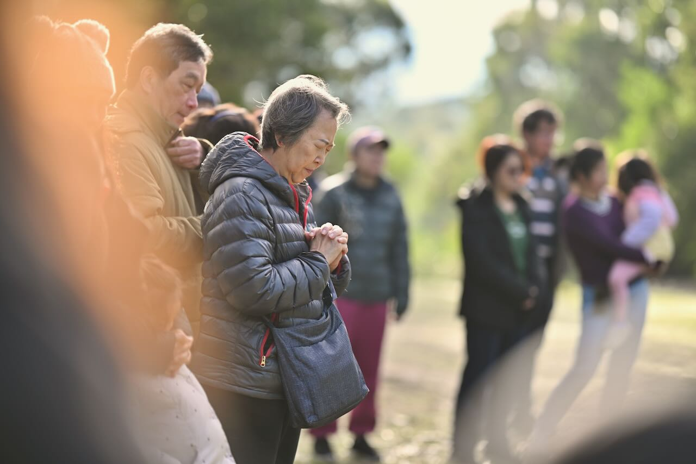
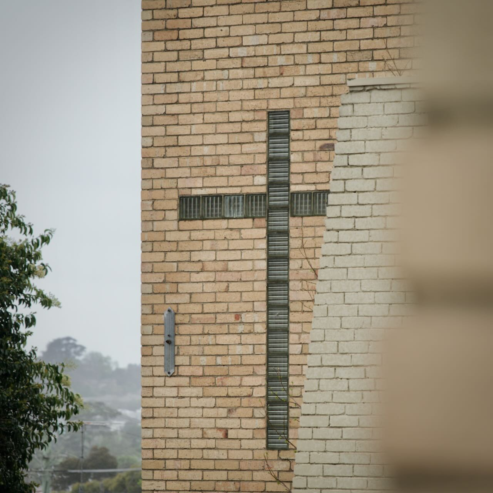
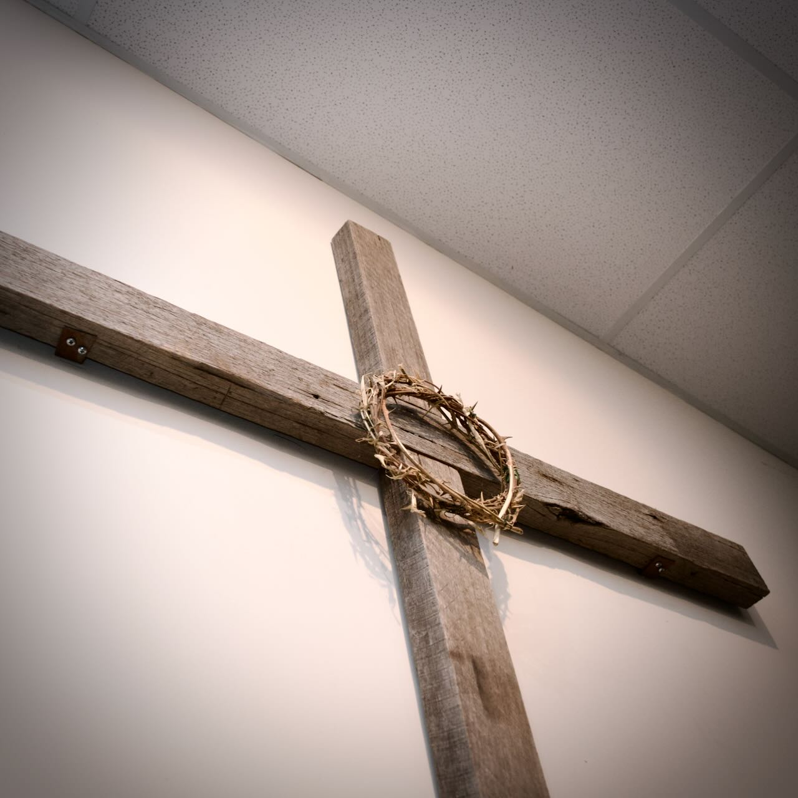
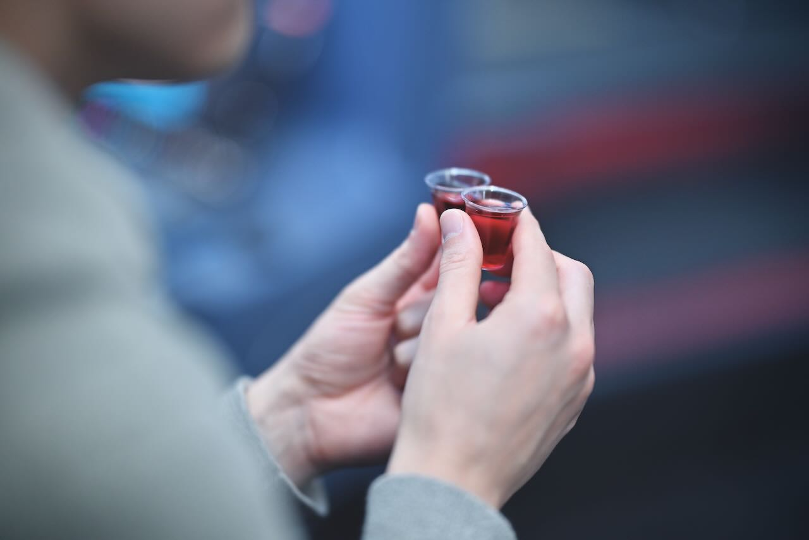

Following Jesus
We want to know Jesus more deeply and put His teaching into practice in our everyday lives. Through worship, prayer, Scripture and learning together, we grow in faith.
Join us on Sunday →We're a church community learning to follow Jesus, love people and live with purpose. Whether you're exploring faith or looking for a place to belong, there's a place for you at BWMC.
We believe church is about more than a building or a weekly service. It's about people discovering the hope of Jesus, forming meaningful relationships and finding opportunities to make a difference.
Wherever you are on your journey of faith, we hope BWMC can be a place where you feel welcome, ask questions, grow and take your next step.


We want to know Jesus more deeply and put His teaching into practice in our everyday lives. Through worship, prayer, Scripture and learning together, we grow in faith.
Join us on Sunday →
Life is better when we share it. We want to be a welcoming community where people build friendships, encourage one another and find a place to belong.
Find your place →
Faith moves us to care for others. We encourage people to use their gifts, serve our community and share the love of Jesus through practical acts of kindness.
Get involved →